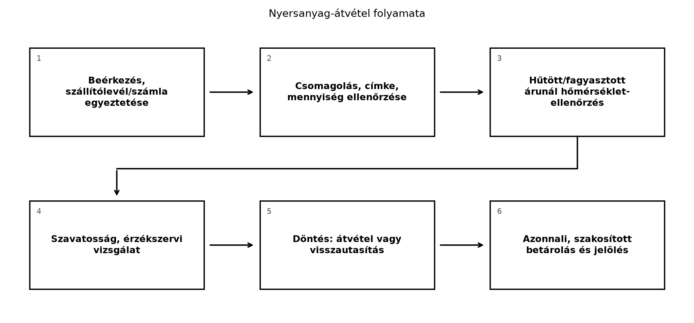

Péntek reggel fél hat van. A cukrászüzembe egyszerre érkezik a tejszállító, a lisztes kocsi és a tojást hozó beszállító. A pultban már állnak a hétvégi krémes és torta rendelések, a hűtőben pedig a tegnapi tejszínhab. Ha a friss tejet 9 °C-on veszed át, mert „majd úgyis lehűl”, akkor a hűtőlánc már sérült: a tejszínes krémből néhány óra alatt romlásveszélyes termék lehet. Ha a lisztet a vegyszerek mellé teszed, szennyeződhet. Ha a nyitott csomagú mandulalisztre nem írsz felbontási dátumot, nem tudod, mi a régebbi. A nyersanyagok átvétele és tárolása az első védvonal az élelmiszerbiztonságban.
A cukrászüzemben minden nyersanyagnak megvan a maga helye. Száraz, hűvös polcon áll a liszt, a cukor és a csokoládé. Külön hűtőben a tej és a tojás. A fagyasztóban a gyorsfagyasztott gyümölcspüré. A nyitott csomagok előre kerülnek, a lejárat közelébe kerülők piros jelölést kapnak. A beszállító nem hozhatja le a raklapot a cukrászműhely kellős közepére, mert a csomagolás kartonja és a kinti por szennyezőforrás.
Az átvételi folyamat egyszerű láncként is lerajzolható:

A diagram csak a gerincet mutatja. A következő alfejezetekben minden lépést megtöltünk tartalommal.
Definíció. A nyersanyag-átvétel olyan ellenőrzési műveletsor, amelynek során a beérkező árut – szállítólevél, számla, csomagolás, címke, hőmérséklet, mennyiség és érzékszervi állapot szerint – összevetjük a megrendeléssel és az élelmiszerbiztonsági elvárásokkal.
Definíció. A szakosított tárolás azt jelenti, hogy a nyersanyagokat csoportonként, a tulajdonságaiknak és kockázatuknak megfelelő helyen, hőmérsékleten és elkülönítéssel tároljuk, hogy ne szennyezzék egymást, és ne romoljanak.
Definíció. A hűtőlánc a hűtést igénylő élelmiszerek folyamatos, megszakítás nélküli hűtve tartása a gyártótól a felhasználásig. A hűtőlánc megszakad, ha az áru túl hosszú ideig vagy túl magas hőmérsékleten áll.
Definíció. A FIFO a „first in, first out” angol kifejezés rövidítése: először be, először ki. Azt jelenti, hogy a korábban beérkezett vagy hamarabb lejáró nyersanyagot kell előbb felhasználni. A FEFO a „first expired, first out”: először a leghamarabb lejáró. Gyakorlatban a kettő együtt működik.
Szabály. Minden beérkező tételnél ellenőrizd az okmányokat, a mennyiséget, a csomagolás épségét, a címkét, a szavatossági vagy fogyaszthatósági jelölést, hűtött és fagyasztott árunál a belső hőmérsékletet, és csak megfelelőség esetén tárold be.
Jogszabály. Az élelmiszer-higiéniai alaprendelettel, azaz a 852/2004/EK rendelettel összhangban a cukrász vendéglátó tevékenység során a nyersanyagokat ellenőrzött forrásból kell beszerezni, hőmérsékletüket és tárolásukat az élelmiszerbiztonsági kockázatok szerint kell kezelni. A nyomon követhetőségről a 178/2002/EK rendelet alapelvei adnak keretet: tudni kell, mit kitől vettünk, és kinek adtunk tovább. Az átvétel és tárolás dokumentálása a HACCP-rendszer működéséhez is szükséges. A pontos cikkszámokat, hőmérsékleti és időbeli határértékeket mindig a hatályos jogszabály, a NÉBIH útmutatója és a gyártói adatlap szerint kell ellenőrizni.
Átvétel előtt ne engedd be a szállítót a termelőtérbe. Az árut az átvételi zónában, tiszta felületen, lehetőleg védett helyen vizsgáld meg, mielőtt a raktárba kerül.
Tilos. Lejárt, felengedett, sérült csomagolású, jelöletlen vagy ismeretlen eredetű nyersanyagot „megmentésként” betárolni és feldolgozni. A hűtött áru átvétel utáni hosszas pihentetése a hűtőlánc megszakítása.
A tárolóhelyeket a nyersanyag jellege szerint kell kialakítani. A fő csoportok:
| Tárolási csoport | Példák a cukrászatban | Tájékoztató tárolási hőmérséklet | Higiéniai megjegyzés |
|---|---|---|---|
| Szárazáru | liszt, cukor, kakaópor, csokoládé, olajos magvak, fűszerek, adalékanyagok | 15–20 °C, alacsony páratartalom, száraz, lefedett | Eredeti csomagolásban, polcon, padlótól távol; kártevő-ellenőrzés |
| Hűtött tejtermék | tej, tejszín, vaj, túró, mascarpone | 0–5 °C (ellenőrizendő: útmutató) | Zárt edényben, nyers hústól elkülönítve |
| Héjas tojás | tojás | állandó, hűvös hőmérséklet, a gyártói/forgalmazói előírás szerint (ellenőrizendő: 589/2008/EK, NÉBIH-útmutató) | Eredeti tálcán, a kész termékektől és a krémektől elkülönítve; a hűtőből kivett tojás ne párásodjon be; héjas tojást nem mosunk tárolás előtt |
| Fagyasztott áru | gyorsfagyasztott gyümölcspüré, fagyasztott vaj, félkész tészta | −18 °C vagy hidegebb (ellenőrizendő: útmutató) | Felengedés után visszafagyasztani tilos; felengedtetést hűtőben végezd |
| Gyümölcs, zöldség, friss áru | alma, citrom, narancs, eper, menta, rebarbara | 5–10 °C, fajtától függően (ellenőrizendő) | Elkülönítve, ne a tej fölé, mert a föld és a levelek szennyezhetnek |
| Allergén nyersanyagok | dió, mandula, mogyoró, szezám, gluténtartalmú liszt | csoporttól függően | Külön, lezárt, jelölt doboz; kanalat és mérőeszközt ne használj közösen más csoporttal |
| Vegyszerek, tisztítószerek | fertőtlenítő, súrolószer, zsíroldó, rovarirtó | elkülönített, zárható szekrény | Élelmiszertől elkülönítve, eredeti, jól záródó csomagolásban, biztonsági adatlappal |
A tárolóhelyek hőmérővel ellátottak, és a mért hőmérsékletet naponta legalább egyszer rögzítik. A hűtő ajtaját ne hagyd nyitva, a polcokat ne zsúfold tele, mert akkor a hideg levegő nem tud keringeni, és a termék belső hőmérséklete megemelkedik.
A hűtőn belüli sorrend biztonsági logikája: ami fogyasztásra kész, az felül, lefedve és címkézve áll; a nyers tojás zárt dobozban, a nyers hús vagy sós töltelék legalul, tálcán, hogy semmi ne csepegjen a kész termékre.
Higiénia. A tárolóhely padlóját, polcait rendszeresen takarítsd. A kiömlött folyadékot azonnal töröld fel. A sérült csomagolású szárazárut öntsd át tiszta, zárható, feliratozott edénybe, és tüntesd fel az eredeti tételt, lejáratot, allergén-információt.
A FIFO/FEFO elv betartásához a polcokat úgy rendezd, hogy a korábbi lejáratú áru elöl legyen. A beérkező új árut ne tedd a régi elé. A lejáratot havonta legalább egyszer ellenőrizd, és a közeli lejáratú nyersanyagot jelöld meg, helyezd a „most használd fel” zónába.
Szabály. Nyitott csomagolású, eredeti tárolóedényéből kitöltött vagy félkész anyagnál mindig tüntesd fel a felbontás dátumát, a maradék mennyiséget és – ha szükséges – a további felhasználhatósági időt. A gyártó eredeti lejárati ideje a felbontás után általában nem marad érvényes; a felbontás után eltarthatóságot gyártói adatlap vagy belső szabályzat szerint állapítsd meg (ellenőrizendő: gyártói adatlap, belső HACCP-szabályzat).
A hűtőláncot már az átvételnél ellenőrizd. Ha a hűtött áru maghőmérséklete a szállításkor 10 °C fölött van, a lánc nagy valószínűséggel megszakadt. Ilyenkor a tételt vissza kell utasítani, és az átvételi naplóban rögzíteni. Megszakadt hűtőláncú hűtött nyersanyagot hőkezeléssel sem szabad „megmenteni”, mert a már képződött hőstabil toxinokat a hőkezelés nem semmisíti meg (ellenőrizendő: hatályos útmutató). Fagyasztott áru felengedve még akkor sem fagyasztható vissza, ha „csak egy kicsit puhult”.
Az elkészült üzemi félkész termékeket (főzött krém, felvert tészta, gyümölcspüré) ugyanolyan hűtési és jelölési fegyelem alá kell helyezni, mint a vásárolt nyersanyagot. Az üzleti pultban a kész sütemények hűtőpultját 0–5 °C-on tartsd, a tejszínes, tojásos, krémes termékeket ne hagyd szobahőmérsékleten (ellenőrizendő: hatályos útmutató). A vitrinben a termékeket fedd le, az adagolóeszközöket tartsd tisztán, és a pultot naponta fertőtlenítsd.
Higiénia. A vendéglátó tevékenység során keletkező csomagolási hulladékot, használt sütőolajat, szerves hulladékot és veszélyes hulladékot a helyi környezetvédelmi és hulladékgazdálkodási előírások szerint, szerződött elszállítóval, külön gyűjtsd. A hűtőberendezések karbantartásánál a hűtőközegre vonatkozó előírásokat be kell tartani (ellenőrizendő: aktuális hulladékgazdálkodási, levegőtisztaság-védelmi és f-gáz szabályok).
Ebben az alfejezetben két rövid számítás segít: az egyik az átvételi hőmérséklet-eltérés értékelését gyakorolja, a másik a hűtőtároló kapacitását és a FIFO-készletforgást.
1. Számítás (A szint). Elfogadható-e egy tejszállítmány, ha a szállítólevél szerinti hűtési előírás maximum 5 °C, a mért termékmag 4,2 °C, a szállítójármű ajtajánál mért levegő 7,0 °C?
Adott: , mért termékmag , mért raktér-levegő . Keresett: döntés az átvételről.
A jogi és gyakorlati kérdés itt a termékmag hőmérséklete, nem a levegőé. A termékmag 4,2 °C az előírt legfeljebb 5 °C alatt van, ezért az áru hűtöttsége elfogadható. A 7 °C-os levegő viszont jelzés: a jármű hűtőrendszere nem elég hatékony, ezért a szállítót figyelmeztetni kell, és a következő szállításnál szorosabb ellenőrzést kell végezni. Ha a termékmag 5,5 °C lenne, a tételt visszautasítanánk, vagy csak a HACCP-szabályzat szerinti helyesbítés után vennénk át.
2. Számítás (B szint). Raktári körforgás. A szárazáru-polcon a hónap elején van 18 kg mandulaliszt. A hónapban beérkezik két szállítmány: 10 kg és 12 kg. A termelés felhasznál 27 kg-ot. Mennyi a zárókészlet, ha közben 0,5 kg selejtezésre kerül lejárat miatt?
Adott:
,
beszerzés
,
felhasználás
,
selejt
.
Keresett:
.
Képlet:
.
Behelyettesítés:
Ellenőrzés: A nyitó plusz beszerzés 40 kg. Ebből
felhasználás és selejt összesen 27,5 kg. A készletnek 12,5 kg-nak kell
lennie. ∎
Ez a készletforgási séma a későbbi készletgazdálkodási fejezetben (Készletgazdálkodás: átlagkészlet, áruforgalmi mérlegsor, forgási sebesség) kap részletesebb tárgyalást.
Cél: a tanuló önállóan el tudja végezni egy hűtött és egy száraz nyersanyag átvételét, és a FIFO/FEFO elv szerint be tudja tárolni.
Eszközök és anyagok: tiszta átvételi asztal, mérleg, lapát vagy kanál, szúróhőmérő (az infrahőmérő csak felületi szűréshez), fertőtlenítő kendő, jelölőcímkék, toll, szállítólevél-minta, zárható tárolódoboz, hűtőszekrény, szárazáru-polc.
Higiéniai munkakezdés: munkaruha, hajháló, tiszta kéz, tiszta csizma; az átvételi felületet fertőtlenítsd.
Biztonsági korlát. A gyakorlatot tanműhelyben vagy üzemben, oktatói felügyelet mellett végezd. Nehéz zsákot vagy rekeszt egyedül ne emelj; használj kézikocsit, vagy kérj segítséget. A hűtött áru kipakolásánál ügyelj a nedves, csúszós padlóra.
Technológiai lap.
| Nyersanyag | Mennyiség (g) | Megjegyzés |
|---|---|---|
| Tej, pasztőrözött, 2,8 % | 10 000 | 10 l, hűtött, lejárat ellenőrzött |
| Liszt, búzafinomliszt BL 55 | 25 000 | 25 kg zsák, szárazáru |
| Összes átvett tömeg | 35 000 | Nettó, csomagolás nélkül |
Eszközök és gépek: mérleg, hőmérő, fertőtlenítő, zárható lisztadagoló, hűtő, polc, kézikocsi.
Műveleti sorrend:
Kérd el a szállítólevelet, és hasonlítsd össze a megrendeléssel.
Ellenőrizd a tej csomagolását: ne legyen felpúposodott, folyó, sérült doboz.
Mérd a tej maghőmérsékletét; tanulási határ: 0–5 °C (ellenőrizendő). Ha magasabb, jelentsd, és ne tárold be a többi hűtött áru közé.
Ellenőrizd a lisztes zsákot: ép, száraz, kártevőmentes, a címkén liszt típusa, nyomon követési tétel, lejárat.
Mérj le egy mintát vagy a teljes nettó tömeget, és vesd össze a szállítólevéllel.
Dönts: mindkettő megfelel, ezért betárolhatod. A tejet azonnal tedd a hűtő alsó polcára, lefedve, címkével előre forgatva. A lisztet töltsd zárt adagolóba, vagy tedd a szárazáru-polcra, a régi liszt mögé; írd fel a felbontás dátumát, ha felbontottad.
A polcon a lejárat szerinti sorrendet igazítsd: a legkorábbi lejárat kerüljön előre.
Dokumentáld az átvételt az átvételi naplóban: termék, mennyiség, tétel, hőmérséklet, szállító, átvétel időpontja, döntés.
Kritikus pontok: hűtött áru hőmérséklete, csomagolás sérülése, allergén szennyeződés, lejárat. Ha bármelyik nem megfelelő, a tételt felcímkézve el kell különíteni, és visszautasítani vagy a felelős vezetővel intézkedni.
Allergének: A tej tejet tartalmaz; a búzaliszt glutént. Az átvételnél kezeld ezeket allergén nyersanyagként: külön hely, jelölés, keresztszennyeződéstől mentes tárolás.
Minőségi jellemzők: a tej színe fehér, illata friss, állaga folyékony, nem csomós; a liszt színe egyenletes, illata semleges, állaga száraz, nem csomós, nem dohos.
Tárolás, eltarthatóság: tej 0–5 °C-on a fogyaszthatósági időn belül; liszt száraz, hűvös helyen a minőségét megőrzi időn belül, felbontás után zárt edényben (ellenőrizendő: gyártói adatlap).
Az átvételi asztalt töröld le fertőtlenítő szerrel, a mérleget tisztítsd meg a lehullott liszttől. Az átvételi naplót töltsd ki olvashatóan, dátummal és aláírással. A hűtő hőmérsékletét is jegyezd fel.
Az átvett nyersanyag minőségét ne csak a lejáraton, hanem a felhasználás előtt is ellenőrizd. A tárolás alatti minőség-megőrzés jelei: szárazáru esetén nincs csomósodás, dohos szag, kártevőnyom; hűtött árunál nincs savanyú szag, penész, színváltozás, folyadékcsorgás. A fagyasztott áru felülete ne legyen jégvirágos, összetapadt, mert az olvadás-visszafagyás jele lehet. Az átvételi és tárolási hőmérsékletet ellenőrző mérésekkel igazold.
Egy cukrászüzemben a reggeli átvételnél a hűtött tejszín dobozainak külső hőmérséklete 6 °C, de a szúróhőmérő a termék magjában 9 °C-ot mutat. A szállító azt mondja, hogy „most pakolta ki a kocsiból, és a kocsi hűtője épp jelzett”. A gyakorlott átvevő visszautasítja a tételt, vagy elkülöníti, és kéri a szállító írásos nyilatkozatát a szállítási hőmérsékletről. Az üzem vezetője a hűtőlánc megszakadása miatt nem kockáztat: a tejszínt selejtezik, mert azt krémes és tejszínes süteményekbe használnák, ahol a romlás súlyos vendégkockázatot jelent. Az eset tanulsága: a hőmérséklet-eltérést nem alkupozícióként, hanem élelmiszerbiztonsági adatként kell kezelni. A szállítóval az üzemvezető átnézi a hűtőlánc dokumentációját, és a következő szállításnál szúrópróbaszerűen ismét mérnek.
Válaszolj röviden, majd nézd meg a megoldásokat.
1. feladat (A). Sorold fel a nyersanyag-átvétel hat ellenőrzési pontját, és mindegyikhez írj egy-egy példát, mit néznél meg.
2. feladat (A). Számítsd ki a zárókészletet, ha a hó eleji készlet 8 kg étcsokoládé, a hónapban beérkezik 12 kg, a termelés felhasznál 15 kg, és 0,3 kg lejárat miatt selejtre kerül.
3. feladat (B). Egy hűtőtárolóba érkezik 60 kg tej 4 °C-os termékmaggal. A hűtő belső hőmérséklete 3 °C. Hány kg tejet kell azonnal felhasználni vagy visszautasítani, ha a szabályzat szerint csak 0–5 °C közötti termékmag fogadható el? Válasz indoklással.
4. feladat (B). Tegyük fel, hogy egy szárazáru-polcon 5 zsák liszt van, lejáratuk a napokban: A: 2025. 05. 10., B: 2025. 05. 03., C: 2025. 05. 20., D: 2025. 05. 08., E: 2025. 05. 15. Állítsd őket FEFO-sorrendbe, és írd le, melyik zsákot kell legelőször felhasználni.
5. feladat (C). Egy cukrászüzemben a hűtött tejszállítmány hőmérséklete 8 °C. A szállító szerint a termék „csak 20 percre melegedett fel”. Elemezd, milyen kockázatokkal jár az átvétel, és milyen lépéseket kell tenni a HACCP szerint. Tégy javaslatot a döntésre.
6. feladat (D). Végezd el otthon vagy a tanműhelyben a nyersanyag-átvételi és betárolási gyakorlatot egy hűtött tejre és egy száraz liszttel. Tölts ki egy egyszerű átvételi naplót a szükséges adatokkal. Értékeld az elvégzést a technológiai lap szerint.
Önellenőrzés – válaszok
1. feladat (A) megoldása. Hat pont: (1) okmányok egyeztetése – szállítólevél/számla egyezik-e a megrendeléssel; (2) mennyiség – mérlegelve vagy darabra; (3) csomagolás – ép, száraz, sérülésmentes; (4) címke – összetevő, allergének, lejárat, tétel; (5) hőmérséklet – hűtött/fagyasztott árunál maghőmérséklet; (6) érzékszervi vizsgálat – szín, szag, állag.
2. feladat (A) megoldása.
Adott:
,
,
,
.
Képlet:
.
Ellenőrzés: 20 kg érkezett és nyitó, ebből 15,3 kg fogyott el, maradék
4,7 kg. ∎
3. feladat (B) megoldása. A termékmag 4 °C, ami az előírt 0–5 °C tartományban van. Ezért a 60 kg tej azonnal betárolható, nincs visszautasítandó mennyiség. Ha a mag 5,5 °C lenne, a döntés elutasítás vagy helyesbítés lenne.
4. feladat (B) megoldása. FEFO-sorrend a lejáratok szerint növekvő: B (máj. 03.), D (máj. 08.), A (máj. 10.), E (máj. 15.), C (máj. 20.). Legelőször a B jelű zsákot kell felhasználni.
5. feladat (C) megoldása. A 8 °C-os szállítmány valószínűleg hűtőlánc-megszakadást szenvedett. Kockázatok: romlást okozó és kórokozó baktériumok szaporodhattak, a tejszín minősége romlik, a kész krémben megnő az ételmérgezés kockázata. HACCP szerinti lépések: a tételt azonnal különítsd el, mérj maghőmérsékletet, jelezd a megbízottnak, ne keverd a többi hűtött áruhoz. Javaslat: visszautasítás vagy selejtezés, dokumentálással; hőkezeléssel megmenteni nem szabad, mert a toxinokat nem pusztítja el (ellenőrizendő: hatályos útmutató).
6. feladat (D) megoldása. Az átvételi napló kitöltésének értékelési szempontjai: helyes terméknév, mennyiség, tétel, hőmérséklet, lejárat, szállító, átvétel időpontja, átvevő aláírása, döntés (átvétel/elutasítás). A gyakorlatban ellenőrizni kell a higiéniai munkakezdést, a mérést, a polcrendezést, a felbontási dátum felírását.
A nyersanyagok beszerzése, átvétele és tárolása a cukrászüzem élelmiszerbiztonsági alapja. Átvételkor az okmányokat, a mennyiséget, a csomagolást, a címkét, a szavatosságot és a hőmérsékletet egyaránt ellenőrizni kell. A hűtött áru elfogadható maghőmérséklete tanulási példaként 0–5 °C, fagyasztottnál −18 °C vagy hidegebb (ellenőrizendő). A szakosított tárolás csoportonként, a kockázatnak megfelelő hőmérsékleten és elkülönítéssel történik; a szárazáru, hűtött, fagyasztott, friss gyümölcs-zöldség, allergén és vegyszer külön helyre kerül. A FIFO/FEFO elv szerint a korábbi vagy hamarabb lejáró anyagot előbb kell felhasználni. A nyitott csomagokra felbontási dátumot és készletjelölést kell írni. A hűtőláncot folyamatosan fenn kell tartani; megszakadása esetén a tételt visszautasítani vagy a szabályzat szerint helyesbíteni. Ezek a szabályok a későbbi nyersanyagismereti, előkészítő és készletgazdálkodási fejezetekben is visszatérnek: a Táplálkozástan, fogyasztóvédelem és környezetvédelem, az Előkészítő műveletek és cukrásztechnológiai alapfogalmak, a A vendéglátás alapismeretei: tevékenységek, üzletkörök, tárgyi feltételek és a Készletgazdálkodás: átlagkészlet, áruforgalmi mérlegsor, forgási sebesség részekben.
A szöveg a 852/2004/EK rendelet (élelmiszer-higiénia), a 178/2002/EK rendelet (élelmiszerjog és nyomon követhetőség), valamint a 1169/2011/EU rendelet (fogyasztói tájékoztatás, allergének) általános kereteire hivatkozik. A pontos tárolási hőmérsékletekre, a hűtőlánc elfogadási határaira, a hatósági ellenőrzés gyakoriságára és a hulladékgazdálkodási előírásokra a szövegben jelzett helyeken a hatályos NÉBIH-útmutatókat, a Magyar Élelmiszerkönyv és a környezetvédelmi jogszabályok aktuális előírásait kell ellenőrizni. A konkrét hőmérsékleti, időbeli és lejárati értékek tanulási példák, nem hatósági előírások. A gyakorlati receptnél a technológiai lap az üzemi gyakorlatban szokásos ellenőrzőlistát tükrözi, nem jogszabályi idézet.